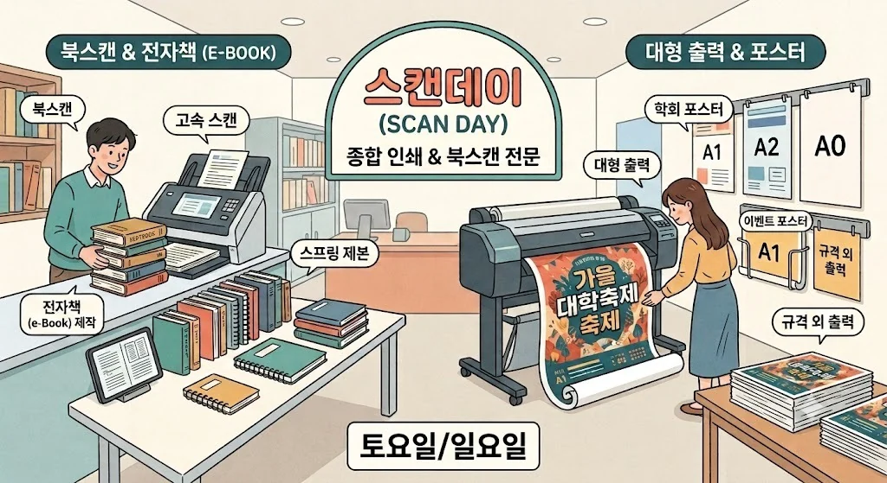
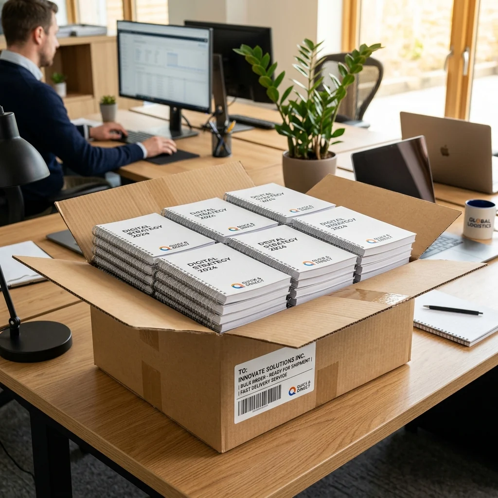
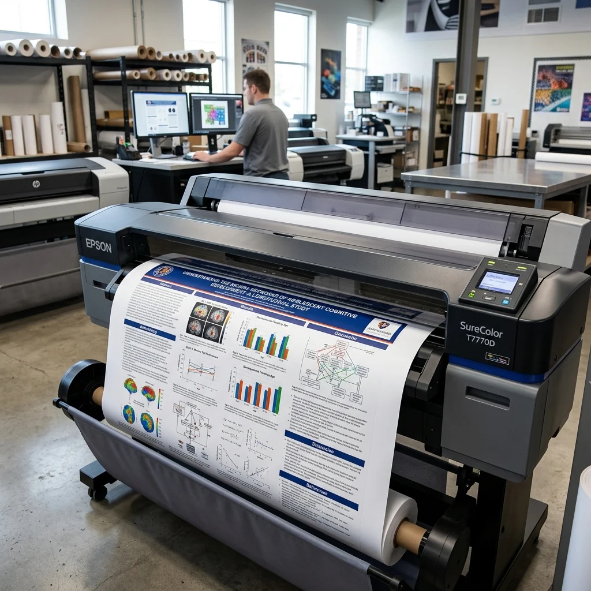
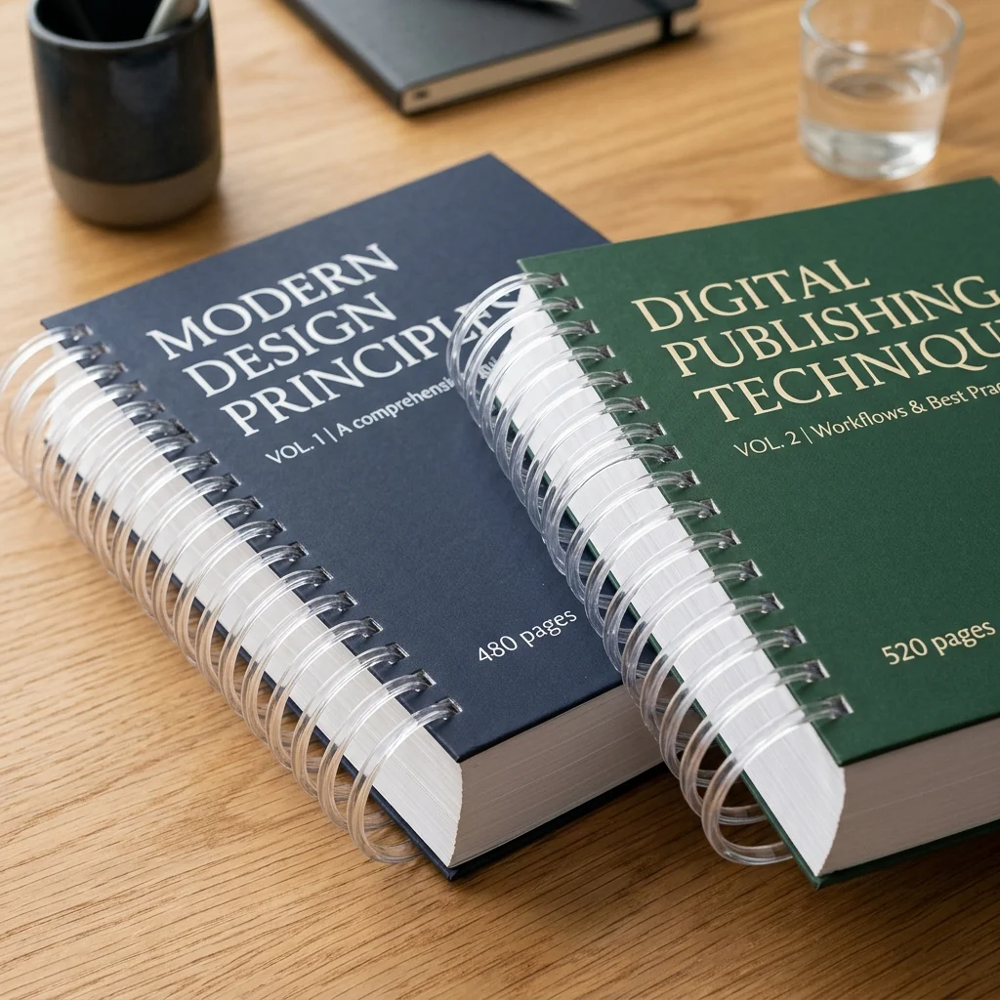
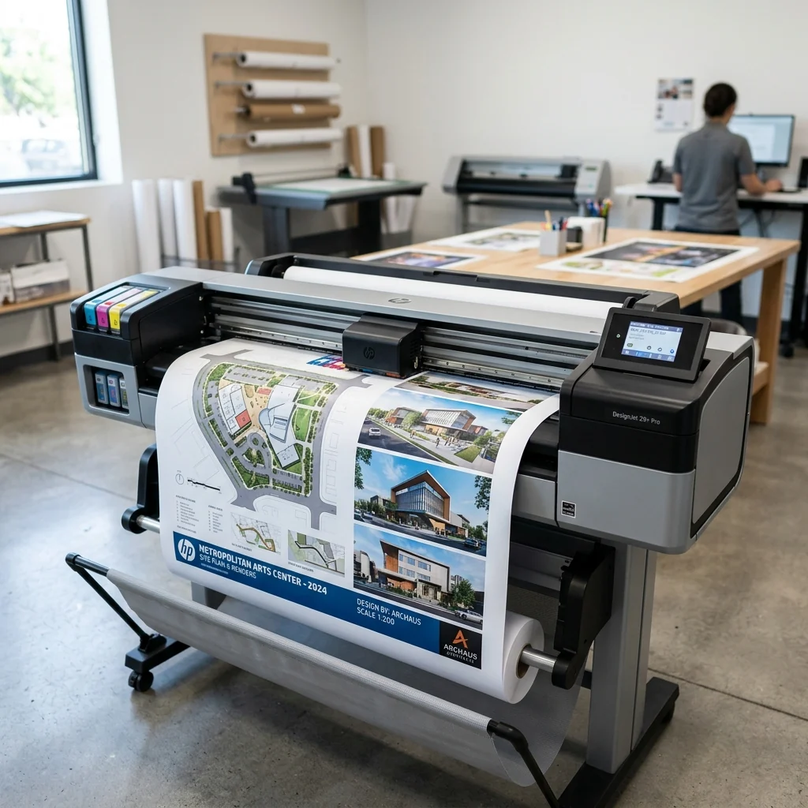
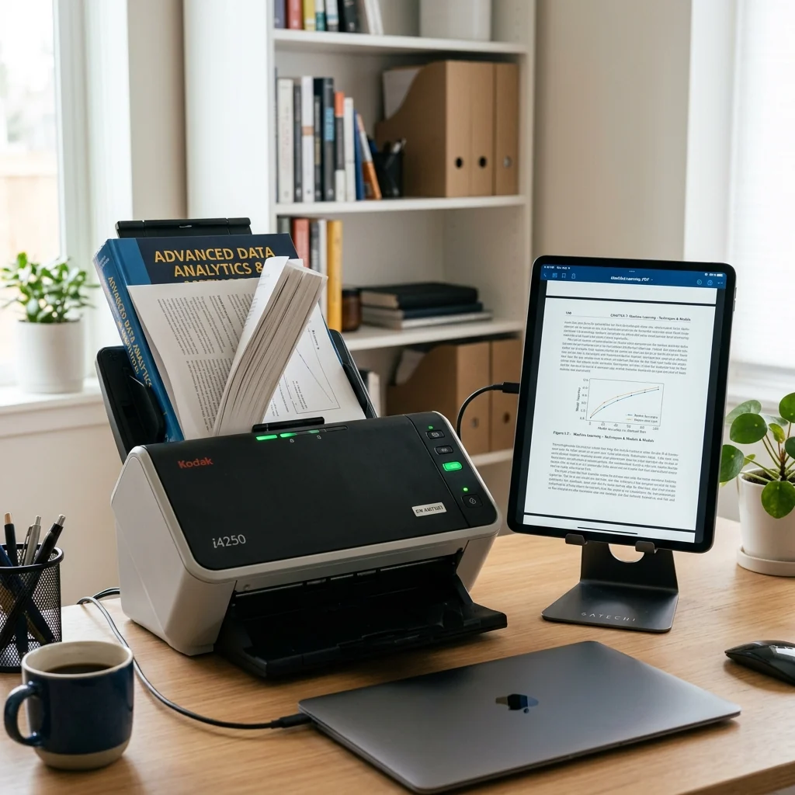
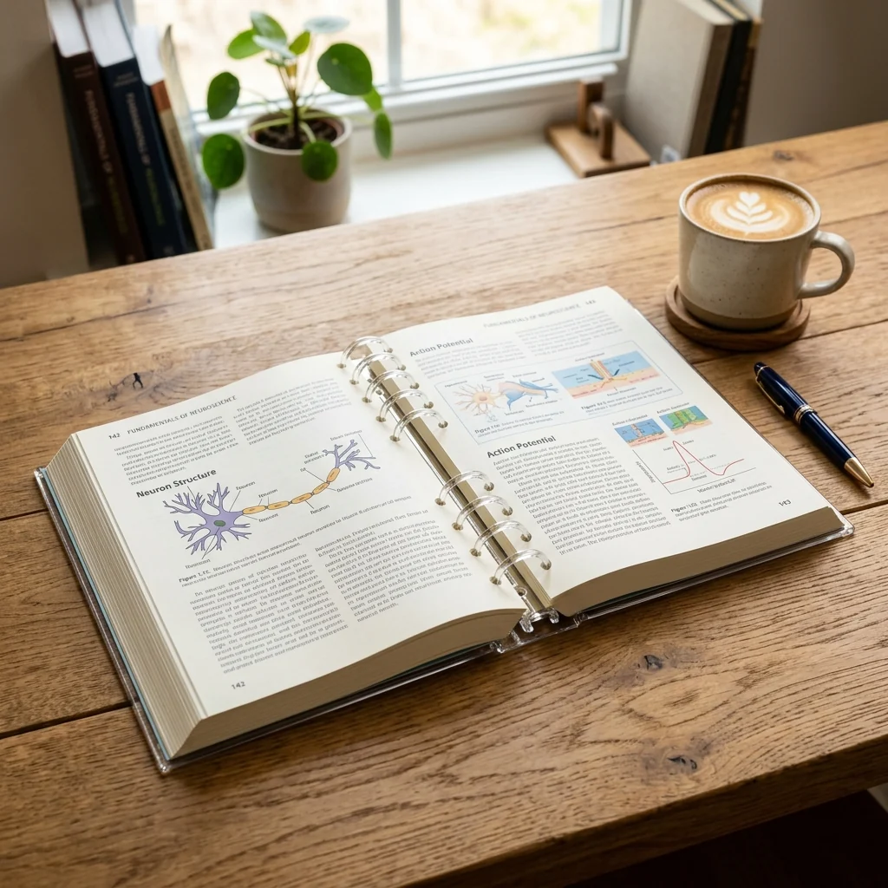

[스캔데이] 추석 지나고 밀린 공부&업무? 주말에도 문 열려있답니다~~~ (주말 외 빨간날은 닫아요~)
다들 긴 추석 연휴 잘 보내셨나요? 연휴 동안 밀린 과제나 발표 준비, 서류 정리는 주말에도 영업하는 왕십리 스캔데이에서 셀프 북스캔, 대형 포스터 출력, 스프링 제본으로 깔끔하게 해결하세요.
초고속 북스캔부터 프리미엄 대형 출력까지, 스캔데이의 전문 서비스 가이드

다들 긴 추석 연휴 잘 보내셨나요? 연휴 동안 밀린 과제나 발표 준비, 서류 정리는 주말에도 영업하는 왕십리 스캔데이에서 셀프 북스캔, 대형 포스터 출력, 스프링 제본으로 깔끔하게 해결하세요.
평일에 일하고, 학교 다니고, 바쁘게 지내다 보면 늘 미루게 되는 일들이 참 많죠~? 일요일에도 문을 활짝 여는 왕십리 스캔데이에서 평일에 미뤄둔 작업들을 한 번에 해결하세요.
다들 집에 꽂혀만 있고 손은 잘 안 가는 책들 많으시죠? 무거운 종이책들은 그만! 책을 싹다 '전자화(PDF)'하는 북스캔으로 스마트함을 챙겨보세요.

산더미 같은 PDF 파일들... 직접 출력해서 하나하나 제본하느라 아까운 시간 낭비하지 마세요! 초고속 프리미엄 스프링 제본으로 튼튼하게!

스캔데이만의 투명한 가격 정보! 기본 30분에 최대 10권 스캔 가능한 시간제 스캐너 대여 요금제를 확인해보세요.
비전의 일치는 시야의 일치에서 시작됩니다. 스타트업 및 B2B 기업을 위한 대형 조감도 출력과 글로벌 1위 ABBYY OCR 디지털 자산화 솔루션.

수개월의 연구 데이터를 완벽하게 증명하십시오. 한양대 박사 과정 및 교수진을 위한 스캔데이 A1/A2 프리미엄 포스터 대형 출력 솔루션.

포트폴리오, 교재, 매뉴얼 준비 완벽 가이드! 스캔데이에서 알려드리는 목적별 맞춤 제본 방식 꿀팁 대방출.

주말에 급하게 학술 포스터를 출력해야 한다면? 다양한 지역에서 스캔데이로 모여드는 이유를 확인하세요.

야간이나 주말 퇴근 후 직장인들도 쉽게 들를 수 있는 초고속 스캔 프로세스를 소개합니다.

무거운 전공서적, 이제 가볍게 들고 다니세요. 크리스탈 링으로 넘김이 부드러운 제본.